Topics Covered
- Introduction
- Ideation
- Bill of Materials
- PCB Fabrication
- CNC Machining
- Resin Pouring
- Programming
- Assembly
- Finished Project
- Review
- Showcase
Lazy Waterer
For my Final project for this module, I decided to make an EZ plant watering system. I decided on making my EP1000 simpler and more efficient to use, I removed unnecessary components. I decided on a modular system where everything is portable and easy to switch around.
Ideation
With this initial idea, I wanted to use a wifi board ESP8622. Where the watering system can be controlled through a phone app/web remotely.
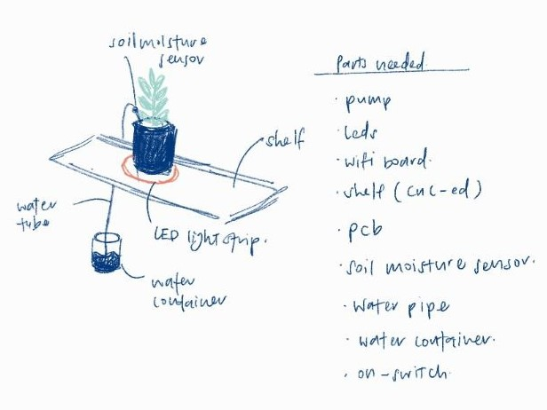However, due to my inexperience with using a wifi module, my teacher Mr Chew suggested that I simplify my project. As such, I decided to use ATtiny1614 instead with the following setup. The shelf was also not such a great idea and I decided a pot stand would be much better.
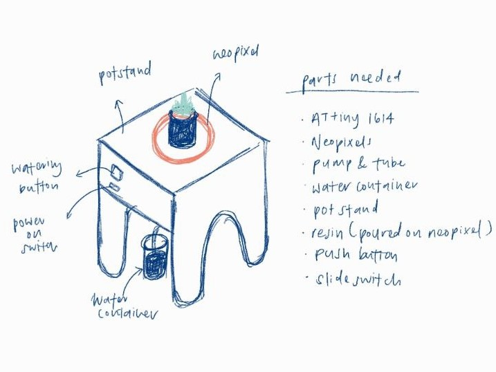| Material used | Estimated price |
|---|---|
| Copper PCB Board | $- |
| ATtiny1614 | $1.50 |
| A03400 (n-channel MOSFFET) | $- |
| 1N4001 (diode) | $- |
| AMS1117 - 5V | $- |
| Resistors 1K & 1M | $- |
| Capacitors 10uF & 1uF | $- |
| 4xAA Battery Case (6V) | $1.00 |
| AA Batteries x4 | $2.00 |
| NeoPixel x 10 LEDs | $- |
| Submersible Water Pump | $3.50 |
| Mechanical Keyboard Switch | $0.60 |
| Slide switch | $0.80 |
| Resistive Soil Moisture Sensor | $3.96 |
| 6mm*8mm White Silicon Tube | $2.04 |
| Resin | $- |
| 18mm Plywood | $- |
| Water Container | FREE |
PCB Fabrication
Before I can begin designing the layout of my PCB, I sketched out what components and modules I would like to place on my PCB.
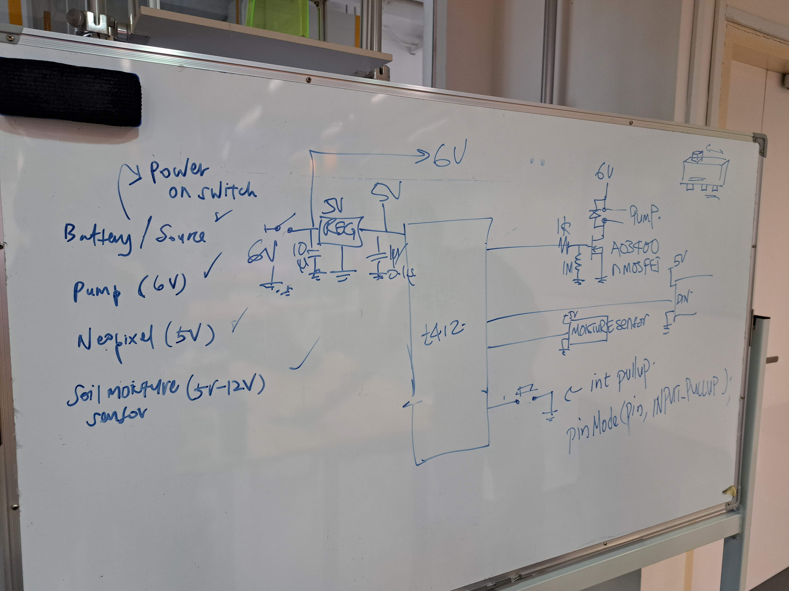I followed the steps as stated in my Electronics Design Documentation. I created my PCB schematic and board layout as shown.
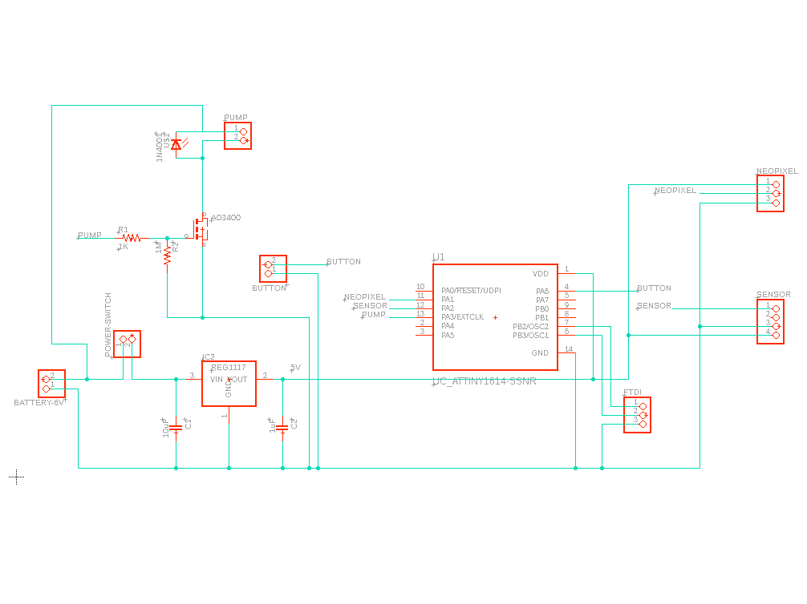 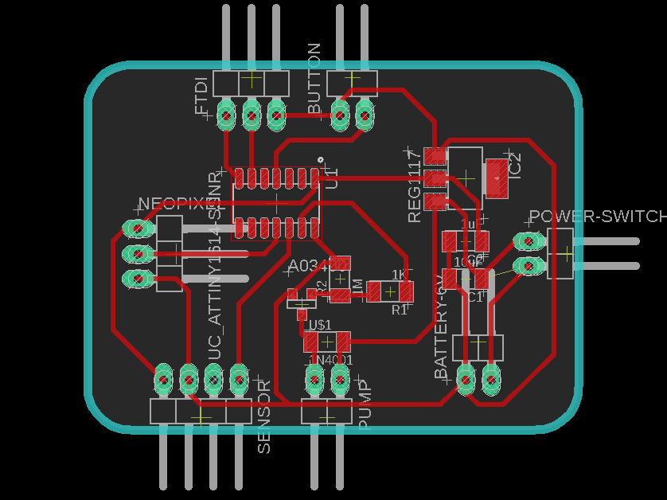I then obtained my trace and outline PNG files shown.
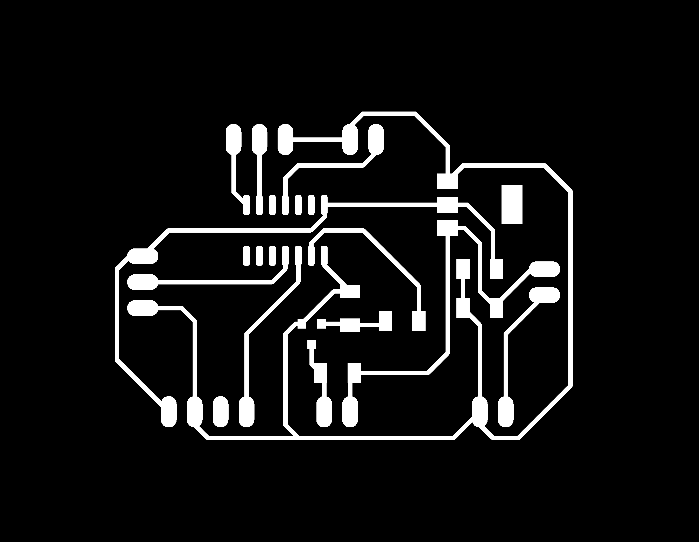
Then I generated the g-codes trace.nc & outline.nc files.
Once that was done, I used the stepcraft to start milling my PCB. I decided to use a 20°x 0.1 mill bit this time round, since it was new, my traces were without any burrs.
I soldered my PCB components onto the PCB board itself.
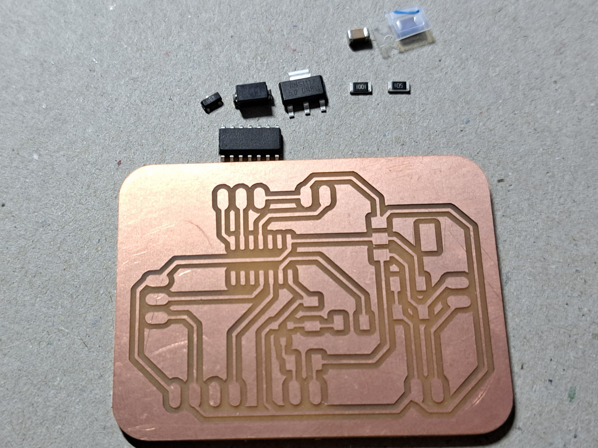 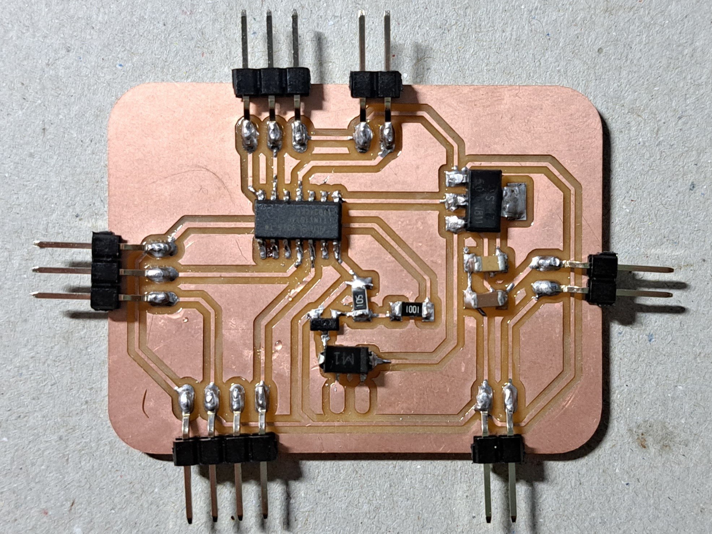However, as from the picture above you can tell that I forgot to solder on 2 pinheads. I did not notice this till later on, and when i did solder the pins on, I accidentally ripped off the padding. I then just decided to solder the jumper wires directly onto the diode.
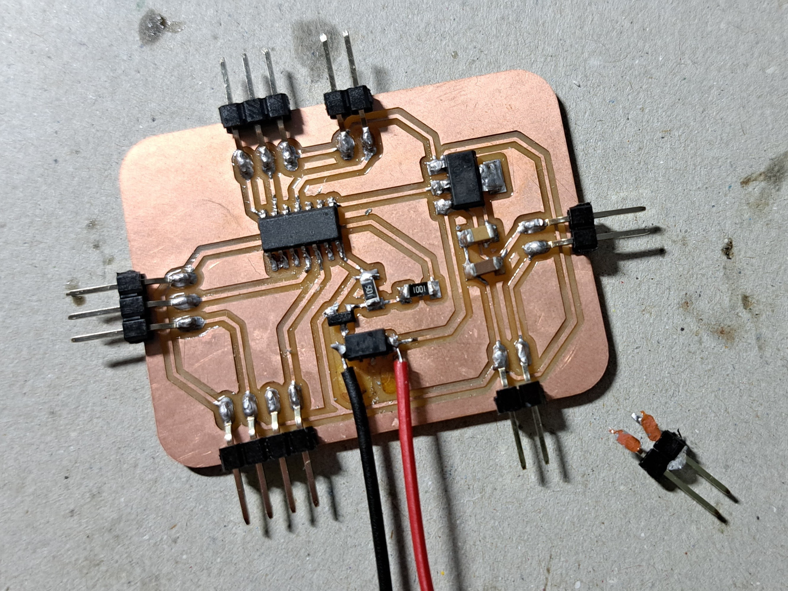When programming my pcb, I also realised I didnt pull out the UPDI pin, thus I soldered on a jumper wire directly. After this was done, this is how my final pcb board looked like.
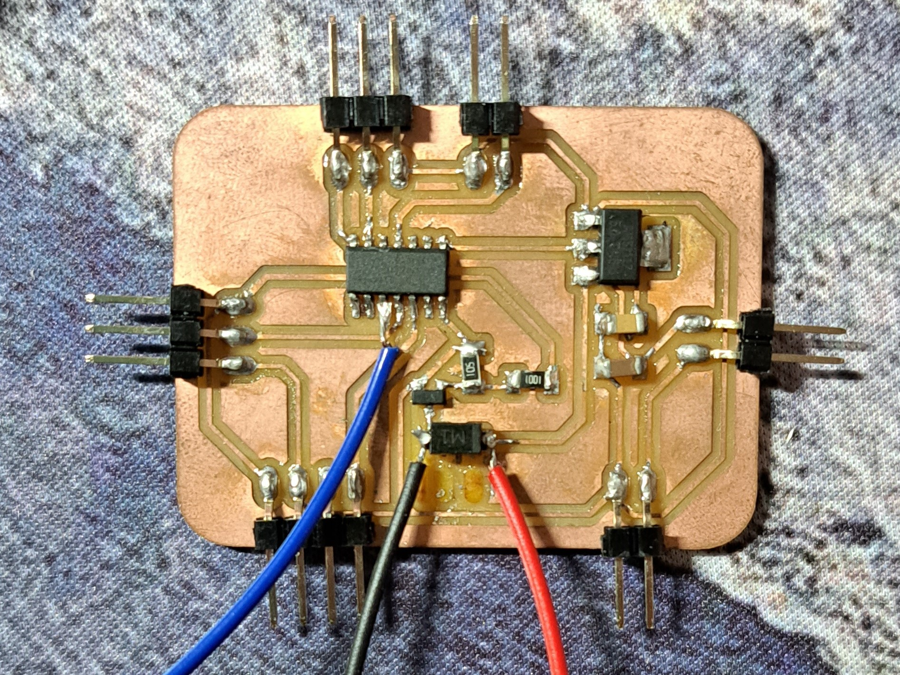 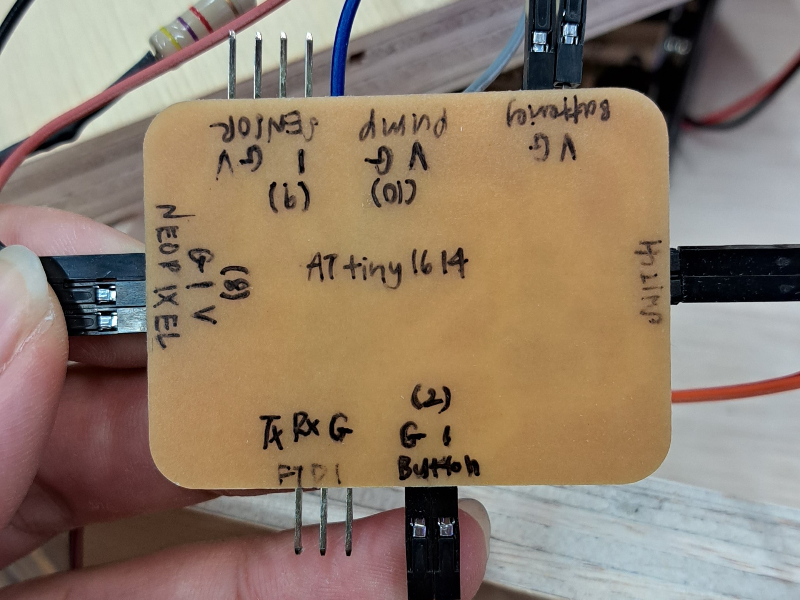Showcase
Here is a video of my final project fabrication process as well as how it works.
Here is my project presentation slide.
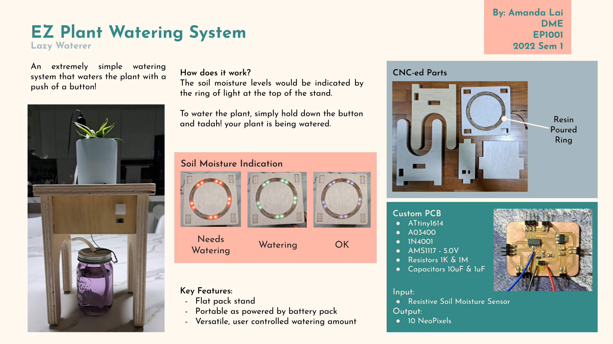